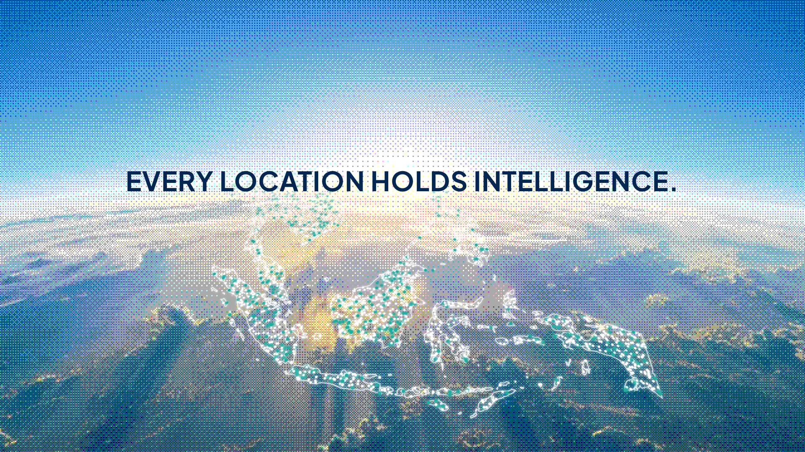
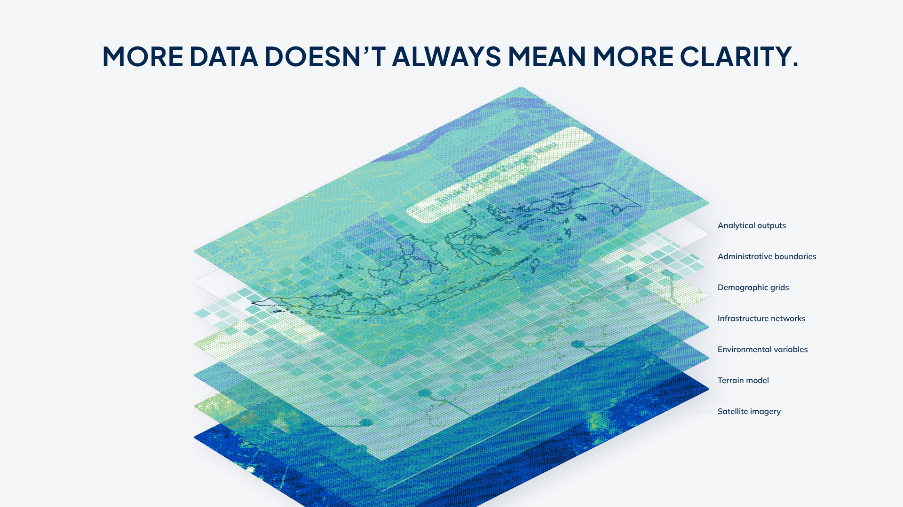
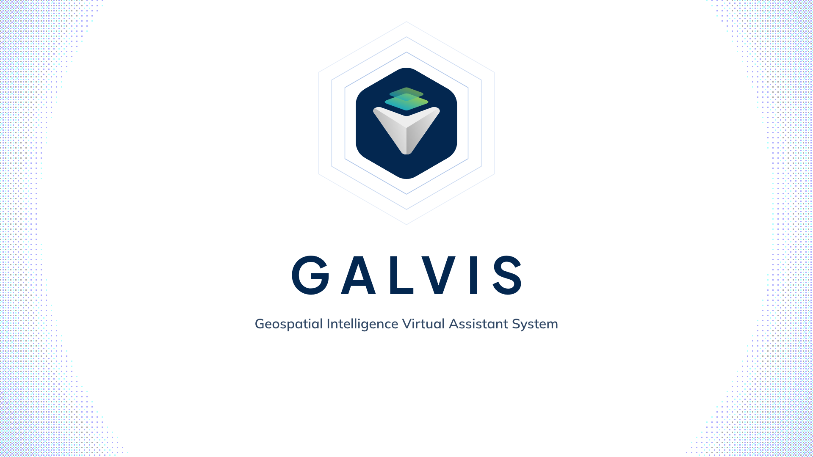
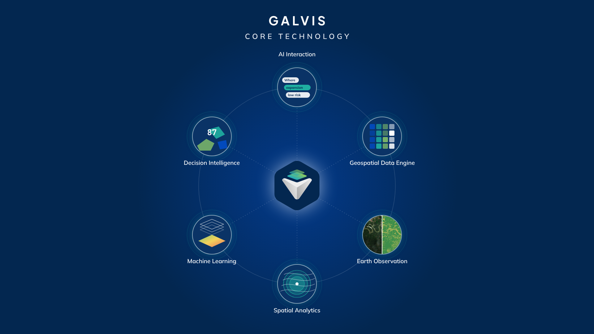
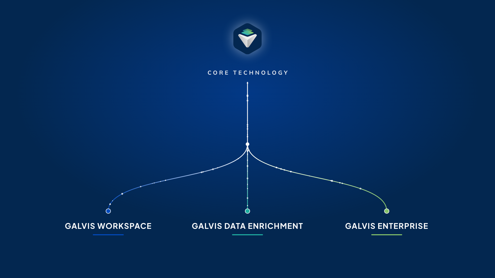
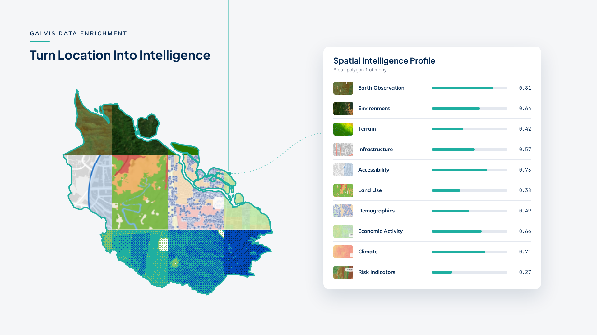
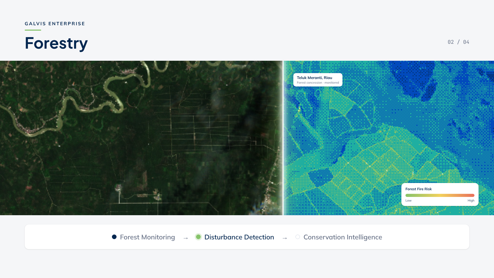
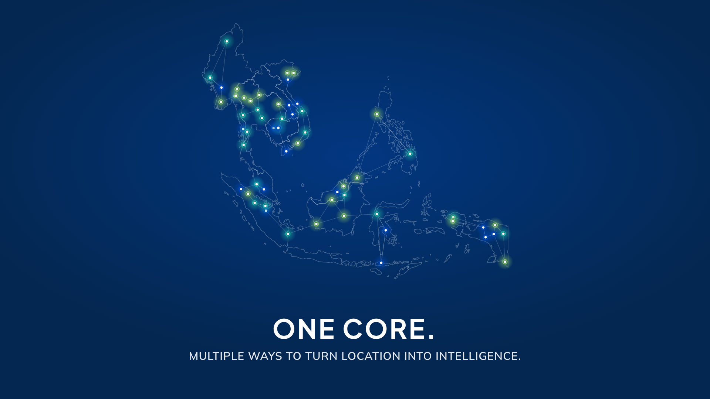

GALVIS Launch Film — Styleframes
One key frame per act, rendered from the HyperFrames project at each act’s styleframe time. Spec: docs/superpowers/specs/2026-10-20-galvis-launch-film-design.md

Dawn earth in the landing dither; SEA coastline and seeded signals on a perspective plane.
EVERY LOCATION HOLDS INTELLIGENCE.

Seven isometric data plates pile up into a muddle (imagery, terrain, environment, infrastructure, demography, boundaries, analytics).
MORE DATA DOESN’T ALWAYS MEAN MORE CLARITY.

The mark assembled from its anatomy — plates, hexagon, arrow — sharp, with keylines; leftover dither dust at the edges.
GALVIS · Geospatial Intelligence Virtual Assistant System

Inside the hexagon: six modules wired to one core, each with a mini visual — one engine, not feature cards.
GALVIS · CORE TECHNOLOGY

The arrow’s thread splits into three branches in the sub-brand colours; particles flow from the one core.
WORKSPACE · DATA ENRICHMENT · ENTERPRISE
Reconstructed GALVIS Workspace: agent plan running, suitability surface painted over Riau.
UNDERSTAND

One polygon enriched by ten attribute maps from gisact.io; the last cells are still raw (dithered).
Turn Location Into Intelligence

Sector strip: the scan beam resolves raw data into a forest-fire risk layer; reconstructed label and legend.
Forestry · Forest Monitoring → Disturbance Detection → Conservation Intelligence

Everything returns to the core and becomes a map of active intelligence nodes in the three product colours.
ONE CORE.
Reverse lockup over the dawn dither, as on galvis.io.
SEE MORE. UNDERSTAND BETTER. DECIDE SMARTER.